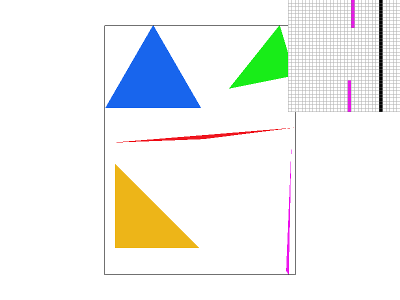
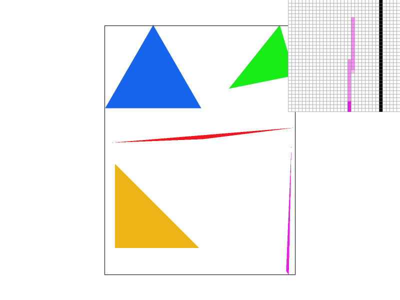
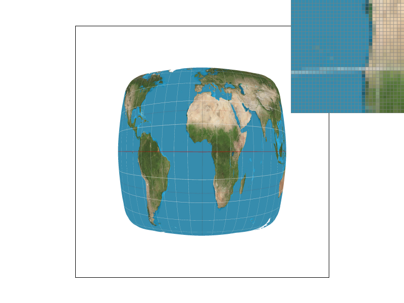
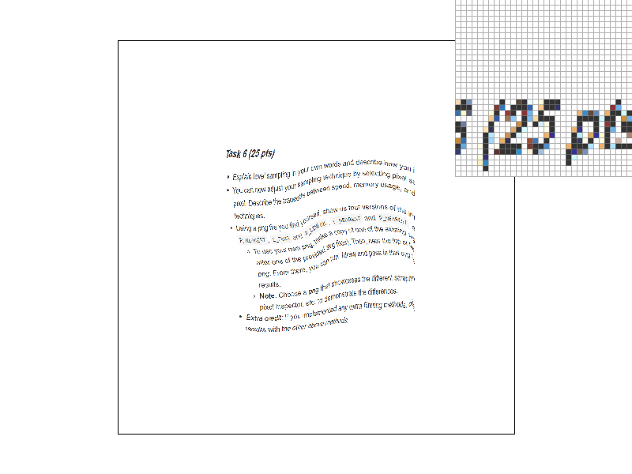
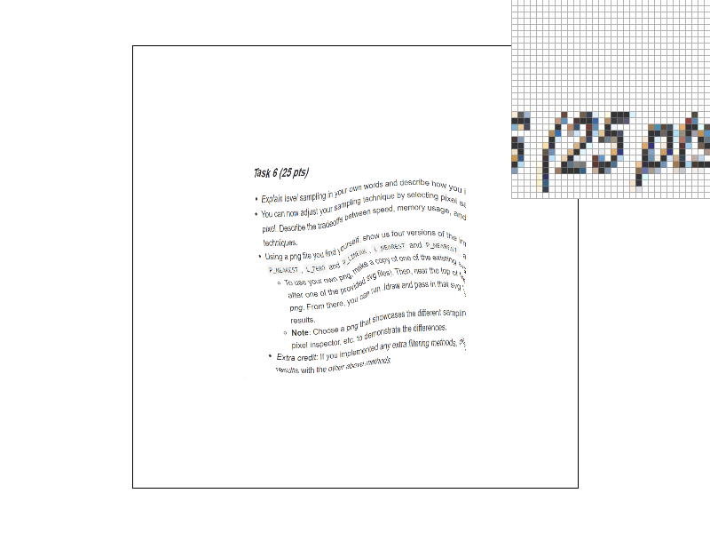
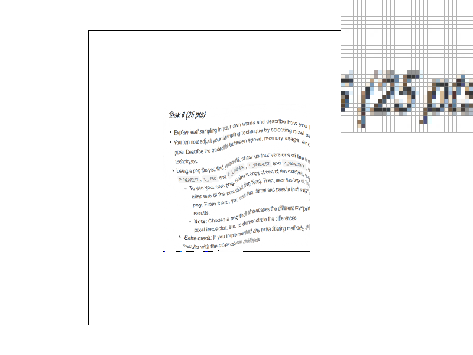
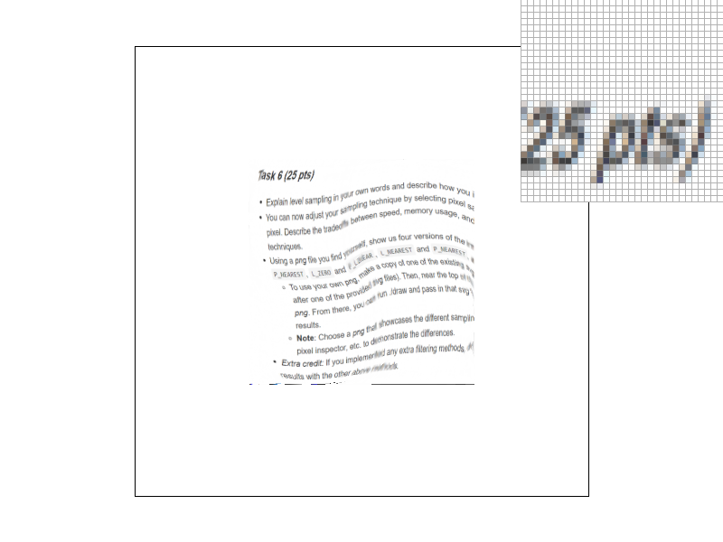

Overview
This is a class project of CS 184 Computer Graphics at UC Berkeley. In this project, we build a simple rasterizer that renders SVG files. The foundational block is the capacity to render simple-color tringles on the image plane. On top of this we build up additional features to render triangles by vertex color or texture mapping. We also implemented pixel supersampling and mipmaps to reduce the artifact and improve performance. Folllowing SVG spec, we also implement standard transformations such as scale, translation and rotation
Section I: Rasterization
Part 1: Rasterizing single-color triangles
To render a single-color trinagle given a set of three points, we iterate over all pixels in the bounding box and fill the framebuffer with assigned color if that pixel is in the triangle. The bounding box is determined by the minimum and maximum values of the x-cordinates and y-cordinates of three points.
The sample point used to determined if a pixel (x,y) is in the triangle is the geometric center (x+0.5,y+0.5). We use the standard three line test to check if a point is in the triangle. Since the vertices of triangles are not sorted, we cannot assume the direction of each edge. Therefore, we additionaly compute the geometric center of the three points and check if the geometric center and the pixel is on the same side of the line. We consider points lying on the edge to be inside the triangle.
Part 2: Antialiasing triangles
We implement supersampling, which is very useful to reduce artifacts such as aliasing. The output is equivalent to applying a low-pass filter on images at a higher resolution. This means on the border of triangles, the pixels will not have a "hard edge" with one pixels filled with color adjancet to an unfilled pixel. Instead, we would see the average between samples in the triangle and samples outside the triangle. Instead of sampling one point at the geometric center of the pixel, we sample an N X N grid of points in the pixel, where N is the square root of sampling rate. Each of the sample point is the geometric center of a square "block" when subdiving the original pixel by a N X N grid.
In practice, the following changes are made to implement superpixel sampling:
|

|

|
|
As expected, 1 sample per pixel leads to hard edge, while higher samples lead to an "average" between in-triangle samples and outside-triangle samples
Part 3: Transforms
We implement standard scale, rotation and translate transforms. We create our own cubeman SVG to show this. This cubeman is about to fall
Section II: Sampling
Part 4: Barycentric coordinates
Given vertices of a triangle p0,p1,p2 and a point p in triangle, p can be expressed as \( \alpha p_0 + \beta p_1 + \gamma p_2\) where \( \alpha+\gamma+\beta=1\). The solution of this system exists and is unqiue when three points are not co-linear. A visual example is shown as below, where R,G,B encodes Barycentric coordinates. These cordinates can be used to interpolate vertec colors.

Part 5: "Pixel sampling" for texture mapping
Another application of Barycentric coordinates is UV texture mapping. Given known UV cordinates of vertices, we can use the Barycentric cordinates to find the UV cordinate of an arbritary point in triangle through convex combinations of UV cordinates of vertices.
Given UV cordinate of a sample point, we can sample the corresponding color from a texture map. We implement two sampling strategies.
|
|

|
|
|
|
Overall, Bilinear is better than Nearest, the difference is more obvious with a low sample rate. This happens because when the sample rate is sufficient large, the aliasing is reduced and the difference is less obvious. (in the practical example shown above, the disconnected white line can be fixed by supersampling because some samples in the pixel will hit the white line)
Part 6: "Level sampling" with mipmaps for texture mapping
Another Antialiasing method is to use mipmaps. Mipmaps are simply resized version of the same texture at different scale, where the level is log2 value of the scale. For exmaple, the original image is L0 and half-sized image is L1.
To perform sampling at level D at cordinate (u,v), we simply perform standard pixel sampling of the level D texture at (u,v). This can be considered as applying a low-pass filter to the texture and hence it reduces unwanted artifacts through pre-filtering.
The level is determined by the following formula $$D=log_2 \ (max(\lVert (\frac{du_p}{dx},\frac{dv_p}{dx}) \rVert_2 , \lVert (\frac{du_p}{dy},\frac{dv_p}{dy}) \rVert_2 ))$$
Where \(u_p,v_p\) are u,v cordinates in the pixel space of level 0 map \([0,width] \times [0,height]\)
In our implementation, the first order differntials are calculated by evaluating the u,v cordinates of (x,y), (x+1,y) and (x,y+1).
Once we obtain a real-valued level D, there are mutiple strategies available.
Comparison between different methods: Supersampling has high quality results but cost large memory and computation time. In particular, the cost of both memory and time grows linearly with sample rate. Linear Pixel Sampling has minimum computation and memory cost, but its improvement from baseline is limited. Mipmaps has some memory cost, but it cost no more than 1/3 of the original memory size used to store textures. It also requires additional computation to compute the gradient, but is less costly than the supersampling. As a result, it leads to worse quality. In particular, it leads to undesired bluriness when the gradient in one direction is signifcantly larger than another.
|

|

|
|

|

|